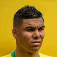

|  | Casemiro |
| Spelling | Carlos Casemiro |
| Gender | Male |
| Ethnic | Brazilian |
| Job | Brazilian Footballer |
| Desc | xxxx |
Affiliation
| Org | Brazil National Team |
| Club as Player | Real Madrid |
| Porto FC [Loan] | |
| xxxx |
2015 06 08 Retrieve
[Casemiro on winning U20 FIFA World Cup in Colombia] I gained a lot of experience playing for the youth sides of the Brazilian team. I developed a lot as a professional and as a person. That title was very important for my career and for that whole generation
[Casemiro on quarterfinals of the Champions League, Porto losing 7-4 on aggregate to Bayern Munich] All defeats have a bitter aftertaste. Nobody likes losing. But we have a calm conscience, because our team did not lack desire to win. We tried to do our best. It was a positive season, but it lacked a title as a crowning achievement of our work. I managed to have a sequence of games and I could develop my football even more. It was a very positive and productive season for me, both from a tactical and technical point of view
[Casemiro on his approach to being part of the Selecao] A player has to approve every minute at the Brazilian team and always do the best he can do, be it in training or during games
[Casemiro on playing a role for Brazil during the Copa America] The Copa America is one of the most traditional tournaments in the world, with a very big representative value. We have to think in terms of doing our best in each game with the motivation of winning the matches and fighting for the title. I am with my head with the Selecao, thinking about having a good performance at the Copa America
[Casemiro on unforgiving Brazil 7-1 defeat at the World Cup against Germany] The shirt of the Brazilian team has always been respected the world over. That defeat won’t change that. The best way forward is to work a lot, because work gets you good results, wins and titles. I think that Brazil is on the right track to have a good Copa America
[Casemiro on Dunga and Brazil the Copa America in 2007] Dunga formed a very strong team and won the title. Robinho played very well
[Casemiro on Copa America 2015] Colombia had an excellent campaign at the World Cup. Venezuela have grown year by year and Peru always present quality football
2016 10 11 Retrieve
[The 24-year-old Brazilian speak about the affection he now has for Real Madrid] I’ll never play in Barcelona, because in Spain I am a Real Madrid supporter. Real Madrid is much more than I expected. I love waking up in the morning and going to Valdebebas [Madrid’s training base]. I love being with the players, joking, working, learning. I try to live football every day. Real Madrid is my life today
2017 03 20 Retrieve
[Madrid midfielder Casemiro admits he would be happy with a draw that could see Brazil seal mathematical qualification for Russia 2018 this month] You always think about winning the match, but we have to play for the points we need. I do not see the draw as being a bad result for us, but Brazil always play to win.
We can’t deny it, of course it’s better playing Uruguay when they don’t have Suarez. Suarez is a great player
2017 03 20b Retrieve
[Casemiro comments on Luiz Suarez suspension. The Barcelona striker has scored 31 goals in 41 appearances for his club this season but will miss the Brazil game after picking up a yellow card in Uruguay’s last World Cup qualifier, a 3-1 defeat by Chile] We can’t deny it, of course it’s better playing Uruguay without Suarez. Suarez is a great player
2017 04 03 Retrieve
[Casemiro has hailed Real Madrid team-mates Luka Modric and Toni Kroos as boasting ability almost the same quality as Zinedine Zidane] Similarities with [Claude] Makelele? Maybe a little bit because I have Kroos and Modric by my side, two players that almost have the same quality as Zidane. Zidane was an idol for me, I grew up watching him play. He always asks me to come out playing the ball and that I don’t just sit deep.
Being coached by Zidane? At the start it was a little difficult, I grew up watching him play. It’s Zidane after all! Now he is respected as a coach. You have to respect Zidane, he’s in the history of football
2017 07 22 Retrieve
[Casemiro tells he was intimidated by coach Zinedine Zidane when he first arrived at the club] At first, I was embarrassed to speak to him. Nowadays, it’s more natural. Sometimes, when we are missing a guy, he participates in the training matches and ends up being the best player
2018 04 15 Retrieve
[Isco gives Real Madrid a glimpse into a future without Ronaldo & Bale] Isco is making history at Real Madrid. I hope he will stay here for many years so that we can continue enjoying his magic.
2018 10 24 Retrieve
[Casemiro accepts that Real Madrid have endured a disastrous start to the season] You have to be honest, we’re not playing well. But you have to trust these players and the coach. We are not in a good run, but we have to work and overcome this situation.
The result has to give us confidence. We know we are not in a good moment, but we have added three points and we have to think about Barcelona
2018 10 29 Retrieve
[Real Madrid 5-1 defeat at Camp Nou] We didn’t give the best image of ourselves. It’s happened too often this season. We didn’t play well enough. We can’t blame the manager. The players are fighting for everything on the pitch, but the result is different. The players on the pitch have the responsibility to run harder, fight harder. You have to give the maximum at this club. We are not having a very good season.
2019 02 11 Retrieve
[Casemiro says Vinicius can get even better] He is showing that he is really good and he can fit in perfectly at Madrid. You have to have patience with Vinicius. We can’t put too much pressure on him because he is so young. Until three months ago, he was playing in Segunda B, and he isn’t 20, he’s only 18. But it’s obvious that he’s quick, has quality and when he plays he surprises people. If he plays like this at 18, imagine what he can do in a few years when he is 20, for example
2019 03 22 Retrieve
[Tite has said he will use the matches to test new players, with AC Milan playmaker Lucas Paqueta and Barcelona midfielder Arthur among those expected to be handed opportunities] They are young players coming into the team and they’ll need time to adapt. It will take time for us to gel, which is normal. But they have a lot of quality and with training [our chemistry] will improve
[Casemiro on becoming Brazil Captain] First, to represent the national team as captain is undoubtedly an honor and a reason for immense pride, because of the greatness of the Selecao and the level of our players. And I’m going back to the stadium [Estadio do Dragao] where I grew a lot as a footballer
2019 03 23 Retrieve
[Casemiro talks about Neymar and Vinicius Junior] We started talking about Neymar here. Let’s spend the whole afternoon talking about him. For me, Neymar’s in the top three and has everything to be the best in the world. In the last two months Vinicius played at a high level, at a level of one of the best in the world. What he’s producing at Real was not normal, for someone who’s 18 years old. Being bold in the shirt of Real Madrid is not easy
[Neymar is recovering from a fractured metatarsal after suffering injury in January while Vinicius has damaged ankle ligaments] We’re talking about two great players, two players who are exceptional. It is up to the coach to talk about whether they can play together or not. There’s no doubt they are great players. Of course, they can play in any team in the world
2019 03 30 Retrieve
[Casemiro talks about the return of coach Zinedine Zidane] Our coach is an icon of the club. Not only as a player but also as a coach. [Zinedine] Zidane has shown that he is more than a coach. For the team, Zidane never left - he left his way of playing. He surely suffered with us at this time and that’s why he returned. Zidane hadn’t left
2019 04 06 Retrieve
[There was a lack of drive in Real Madrid team] Real Madrid have to be at their best in every single training session and every single game. We have to improve. We have a game at home against Eibar on Saturday - we’ve got to think about that game. We know it’s a tough moment, but we count on the fans. We know it’s not easy for us right now, but we’re working hard to come back next year. Madrid always come back.
2019 04 11 Retrieve
[Paul Pogba and Eden Hazard would be ‘welcome’ at Real Madrid] I always say that Madrid must have the best players, as this is the best club in the world. But it is not for me to say which players should be signed. The president [Florentino Perez] and other people are very prepared for that. But they are both very good players, and very good players are always welcome at Real Madrid.
A world-class player at his level can play in any team. If he comes to Madrid he would be welcomed very well - we know he is a great player. For sure he is now thinking about his next Champions League game, that is the type of person he is. We must respect Manchester United also
[Neymar] is a great player, and it would be great if he came here. But this is a question for the president, and for Neymar himself. You’d have to ask him if he wants to come. He said recently he was happy in Paris, so we must respect him, and his club. But a great player like him would be an automatic pick in any team
Of course not. Those who have failed this year are the same as those who won three Champions Leagues in a row. Great players are always welcome, but we have a great squad already, and we will win things again
2019 05 13 Retrieve
[One player who has been linked with a move away from the Bernabeu is Casemiro] There are still three points left to play for at home and we’re already thinking about next season. We have to try and do better until the very last game. We’re working to try and improve, away from home and at home.
2019 06 14 Retrieve
[Casemiro will play for Brazil and the Real Madrid star admitted the South American giants are feeling anxious] We are always favourites and we always have the obligation of playing well and winning. Even without Neymar, our main star, we keep being a strong squad. We’re solid, and the players who played the last match showed that. We are anxious, and that’s normal when we’re about to start such an important competition for us. We are only focused on the match we have tomorrow, we know it will be tough because we know Bolivia.
2019 07 06 Retrieve
[Casemiro believes Brazil would be even better with Neymar as he lauded the quality of the squad ahead of Sunday’s Copa America final against Peru] The quality of Neymar, indisputably we have to say he is the best Brazilian player. If the kid is OK, I’ll tell you, it’s almost impossible to stop him. He is a player of extreme quality, already demonstrated for all, already demonstrated in the Brazilian squad. But, of course, we have other great players. We have great players. If Neymar were here, it would be better for us and it would help a lot more, but he isn’t and we have to overcome his absence, overcome this difficulty. We have created a game identity, but if he were here it would be much better.
[Casemiro, who opened the scoring in that win in Sao Paulo, said Brazil needed to avoid changing their approach in the final] You have to know the time to suffer, you have to know the time to attack, you have to know the time to defend. Above all, we are creating a very solid team at the back. When I say solid back, it’s not just the defenders, everyone is committed. That’s it, don’t lose our characteristics. We don’t have to do anything different from what we’re doing, not only in relation to the last matches, but for the last two, three years. We built a good average of wins, few losses. We don’t have to do anything different. We have to play our football. We know there is a great team as an opponent, but it is our football.
2019 07 08 Retrieve
[Lionel Messi recently claimed the Copa America was set up for Brazil. Casemiro was also asked about Messi but played down the Argentine’s comments] Those who have a mouth speak what they want. It’s not my turn to speak. It’s a delicate issue
2019 08 18 Retrieve
[Casemiro is adamant Gareth Bale has to play for the club this season having proven his worth repeatedly since joining from Tottenham in 2013] He has given us titles, he’s scored in finals and he has a lot of respect from us all. He has to play. He’s a great player and is very important for us
2019 09 01 Retrieve
[Villareal (2) vs (2) Real Madrid. Casemiro frustrated after draw with Villareal] We are lacking everything. We have to score goals and be better defensively. This is a team. If we defend, we all defend. If we attack, we all attack
Real Madrid ore obliged to win always, this jersey makes it an obligation. This is a complicated place to play. We had control for 65 minutes but they got into it and scored. This is the way forward, a draw and keeping adding points. The international break is here and we can change our mindset. You have to keep working. We had control. We had opportunities. I think that we played well but with this jersey, you always have to win. It’s normal [to be crticisised] but people have to see the work we do. You have to keep working to get as far as we can in La Liga
2019 09 07 Retrieve
[Selecao’s 2-2 friendly draw against Colombia in Florida. Goalscorer and Real Madrid midfielder Casemiro, recipient of the game’s only yellow card for a first-half tackle on striker Muriel, was unimpressed with the opposition’s approach] Guys come to play against Brazil and want to intimidate, putting their hands on us, talking, wanting to hit us. You have to win on the ball. They have their tactics and we have ours. When it comes to Brazil there are no friendlies. Teams are always strong against us, so we have to play hard. I took the yellow [for the challenge on Muriel] and I apologised
2019 09 11 Retrieve
[Casemiro has told Real Madrid team-mate Vinicius Junior to start thinking about the Ballon d’Or and other major prizes after making his Brazil debut] Vinicius has a very good head and, in the past year, he has surprised many people with the football he played. It is not normal for a 19-year-old boy to do what he did with the Real Madrid shirt. I told him the other day that this year is a year that he has to start thinking big. I repeat: what he did last year was not normal. He surprised everyone and showed that he is ready to be a starter at Real Madrid. When you are a starting Real Madrid player, you have to think big. Think of the Ballon d’Or, FIFA’s World XI. He is a great player and he has already proven it. Of course, he is very young, you cannot put too much pressure and weight on his back. But I think he has to start thinking big. It is very important for us that he is here with the national team, but we have to be calm; two years ago he was playing in the Flamengo youth team.
2019 09 18 Retrieve
[Casemiro said there was still time for Madrid to recover, but the midfielder lamented a below-par performance in Real Madrid’s 3-0 loss to Paris Saint-Germain] We have not played well, they [PSG] have had control of the game and we know that it is difficult to play here. They are very strong, they have great players. There are no excuses, we have not played well, but there is still time for many things, to keep working. There are many things ahead
We always try to be aggressive, but of course when the result is 3-0 we know that things are more noticeable. We know that if we don’t make an almost perfect match here, you don’t win. There’s a lot of time to change this
[And the French boss was quick to admit his side were outclassed on the day] PSG were superior to us in every aspect. We scored two goals, but they have cancelled both. We must not think beyond, it has been a bad game. We lacked a lot of intensity. When you don’t have that, it’s complicated!
2019 10 02 Retrieve
[Casemiro says Eden Hazard is still in the middle of a period of adaptation at Real Madrid] [Hazard] is trying, but football is [about] goals. We know he is among the world’s top five [players] and it is normal to have a period of adaptation
[Madrid staged a spirited second-half fightback to earn a point against an unfancied Brugge side, with Sergio Ramos and Casemiro grabbing the goals for the hosts. he 27-year-old admitted that the Blancos failed to perform in the first period] In the first half we didn’t do well. I didn’t see the fans leaving [the stadium] angry and in the second half, they supported us a lot. I haven’t seen them supporting us as much as today. We have to play like we did the second half, and we should never ask for forgiveness because we always try to do our best
2019 10 02b Retrieve
[Casemiro said Real Madrid shouldn’t ask for forgiveness because we always try our best] In the first half we didn’t do well. I didn’t see the fans leaving [the stadium] angry and in the second half they supported us a lot. I haven’t seen them supporting us as much as today. We have to play like we did the second half, and we should never ask for forgiveness because we always try to do our best
[Casemiro believes Eden Hazard is still one of the best players in the world] Hazard is trying, but football is [about] goals. We know he is among the world’s top five [players] and it is normal to have a period of adaptation
2019 10 12 Retrieve
[Casemiro admits to having considered his future at Real Madrid during the early days of Zinedine Zidane’s first spell as manager] What’s going on? We are in January and I want to have a role. I want to play, boss!
[He got the answer he was after, with Zidane replying] Case, calm down, once you start to play you’ll never stop.
[Casemiro is a key part of the plans because he can always be relied upon to give his all to the collective cause. A combative midfielder prides himself on that fact] It doesn’t matter to me whether it’s the 12th or the 90th minute, I’ll go for the ball the same way as I go for a plate of food. I go for the ball as if it’s the last
2019 10 16 Retrieve
[Real Madrid star Casemiro has lifted the lid on the decision that changed the course of his career and he believes was the best of his life] I had the chance to go to Sevilla, Intermilan and FC Porto. Lopetegui called me and convinced me to go to Porto. It was the best decision of my life. Lopetegui helped me a lot, and I played all the time. By the time I came back to Madrid, I was a player with experience. I had played the Champions League. When I returned, I was a completely different player
When I arrived, I was 12 or 13, and there were 300 players in the trials, with just 50 players chosen. I introduced myself as a striker. And then I remember the coach asked who played as a goalkeeper - three hands were raised. And then when he asked about strikers, I saw about 40 people raise their hands and I thought: ‘I’m not a striker, there’s a lot of competition’. The same thing happened with midfielders and I thought the same thing. Then the coach said: ‘Who is a defensive midfielder?’ About seven or eight hands went up and I said: ‘I’m a defensive midfielder’. The coach called me and said: ‘You’re not a defensive midfielder, you’re here as a striker,’ but I insisted that I was and that’s where it all began
2019 12 27b Retrieve
[Casemiro says Busquets is Barcelona’s most important player alongside Messi] Along with Messi, Busquets has been the most important player at Barcelona in recent years. We talk about Messi, [Luis] Suarez or before about Neymar, but Busquets for me is the most important. We talked about [Andres] Iniesta and Xavi, but he was always there doing the dirty work. He is one of the best defensive midfielders. Compared to me, he is different. He may not have the physical attributes like mine but he is always positioned very well - he is always well placed and that is very important
2020 02 21 Retrieve
[Casemiro: I wanted Neymar to come to Real Madrid, he’s a great player] I wanted Neymar to come to Real Madrid, I speak to him almost every day, he’s a great player
[Asked about the club’s ambitions for 2020] The league is what shows consistency throughout the year, it’s every weekend, but when the Bernabeu has the Champions League anthem, Madrid is different. I prefer the Champions League
For me, the goal is to steal the ball and the Bernabeu celebrates it in the same way. You enjoy football just as much in every position, my goal is to steal the ball. I enjoy stealing the ball and helping my team-mates
[He added on the qualities that he brings to the Real side] It’s a bit of everything: work, talent, humility, I think above all it’s hard work. When you work you get results and work is my strength. I think we are all important, some play more than others but we are all important
2020 02 27 Retrieve
[The home side threw away a 1-0 lead in their 2-1 defeat at the Bernabeu] The explanation is obvious. We did 75 minutes really well and then we didn’t have any intensity, we lost control of the game, we sat back and they are a great rival, they attacked twice and scored. There’s no excuse. At the weekend we’ve got a tough game against Barcelona. We need to start thinking about that
[On the second leg] If there’s one team capable to turning this around it’s Real Madrid. But I think what’s important is that we played really well for 75 minutes, against a great side, and for 15 minutes we didn’t do what we had to. And they came back to win. It’s not over, but there’s a lot of work ahead
2020 03 07 Retrieve
[Vinicius is benefiting from Hazard’s latest injury] I told him at half-time that he had to go for goal more. Many times, when it’s 50-50, he looks for Karim. If Karim is in a better position, of course he should pass. But if it’s 50-50 he has to go for goal. After the goal, he told me that he had Casemiro in his said saying ‘Shoot! Shoot!
2020 03 09 Retrieve
[Casemiro admitted Real Madrid’s loss to Real Betis could cost them the La Liga title] They were superior and played better, there is no excuse, football is simple. In La Liga every game is difficult. To win La Liga we have to play well in every game and we didn’t play well. We have to keep working hard, we have not been up to the task and we have not played like we did against Barcelona. We are human too, but it could cost us the league title. We have to look at Eibar now
2020 03 27 Retrieve
[Casemiro, also recently declared his desire for Neymar to join him at the Santiago Bernabeu] I wanted Neymar to come to Real Madrid, I speak to him almost every day, he’s a great player
2020 05 16 Retrieve
[Casemiro confident La Liga season will resume] It’s a really significant step, not just for football but for society too, to show people that it is possible. It’s not just about playing football, it’s about people being out of their houses. I think that if we comply with the measures that we have to follow, we too are going to be able to do it.
The work at home was important and we did the things that the club and the coaching staff passed on to us. The guys are working well and it shows now that we’re back that players have worked at home. The physical level has been maintained and you can see that on the [training] pitch
I have tried to help people as much as possible because of the difficult time we are going through. Not only me, the other players and the club too, that is the most important thing. It’s also important to put smiles on people’s faces in times as difficult as these
2020 06 29 Retrieve
[Benzema’s backheel assist is one of the plays of this season] What Karim did, for me is normal. We all know that the qualities he has aren’t of a number nine, but of a number 10. I know him, I know how he plays and the quality he possesses. I asked for the ball in space, and his backheel pass was incredible. It’s Karim’s goal. It’s the backheel pass of a number 10 and you have to congratulate him